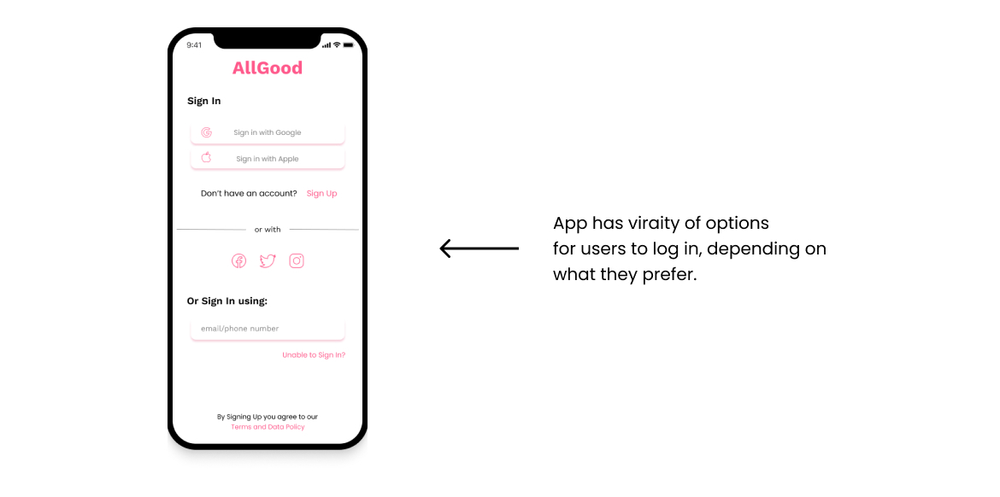
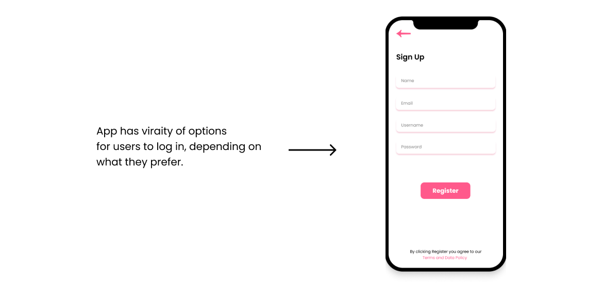

All good is messaging app created to connect users with their friends, family and business
As someone who calls her parents every day due to living abroad I wanted to create a free app for users of all backgrounds to keep them connected with their families and friends as well as to nbe used for work and studying.
 In case users lose their account or forget their passwords they can easily recover their account by verifying it via SMS or Email.
After conducting research, it was shown that users prefer a clean look as well as easy access to their contacts, which prop me to put only 3 icons and other options on the corners of the app for easier access and better managment of chats as well as contacts.
This is the project that I had the most fun designing, from color coordination to illustrations as well as user flow. Prioritizing what users want as well as seeing what I would like in the messaging app motivated me to create joyful way for people to connect.